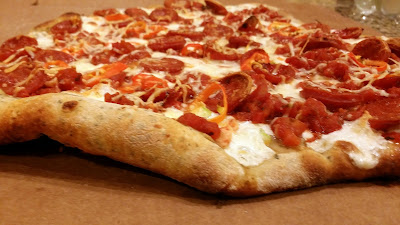

Trader Joes Pizza!

Description
Making pizza can be difficult and time consuming. This Trader Joe pizza will be you weeknight dinner savior.
Ingredient List
- Trader Joe pre-made pizza dough
- Tomato sauce (your choice)
- Red Onion
- Garlic
- Low moisture mozzarella cheese
- Pepperoni
- Flour
- Olive Oil
- Chili Flakes
Directions
- Pre-heat the oven to 475 degrees
- Place dough on lightly floured pan and let sit for 30 minutes
- Peel then mince the garlic
- peel and cut onions into thin half circles
- Cut all your pepporonis into 4 pieces
- Place dough on oiled pan and gently flatten into a circle or the shape of your pan
- Spread tomato sauce on dough
- Add some of your minced garlic (save some for later)
- Add mozzarella cheese
- Add your cut pepporonis
- Add chili flakes
- Spread the rest of your garlic over the pizza
- Add your chopped onion to your pizza
- Place pizza in the oven for 15 minutes
- After 15 minute, set oven to broil
- Once the crust starts to brown, turn off the oven and pull the pizza out